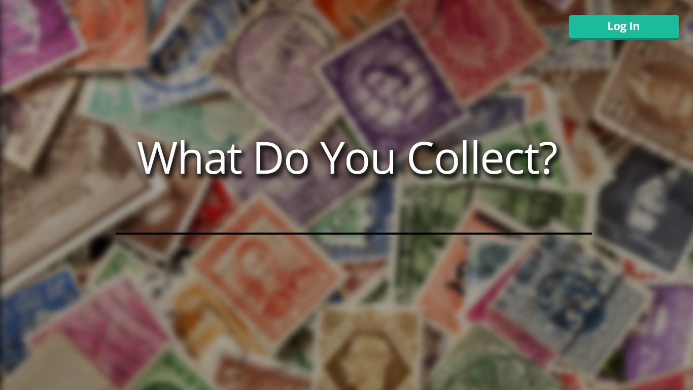
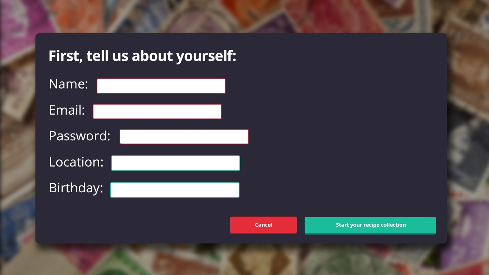
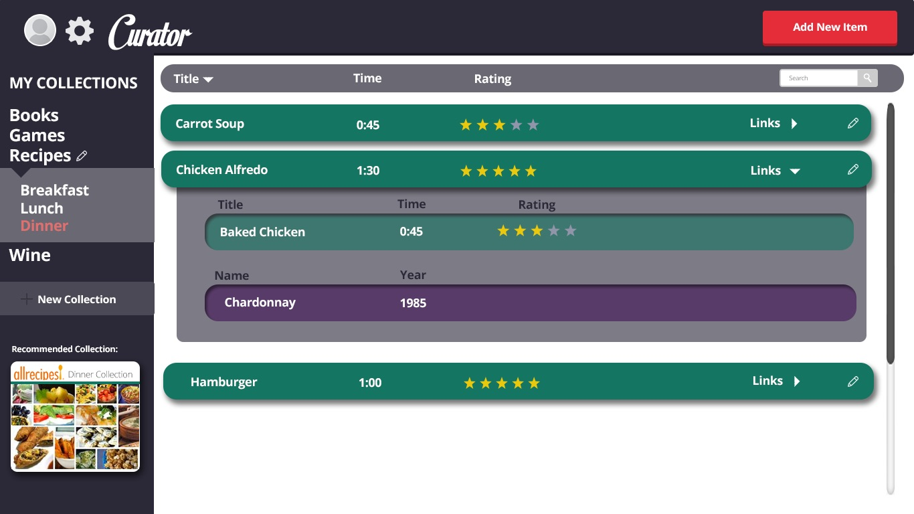
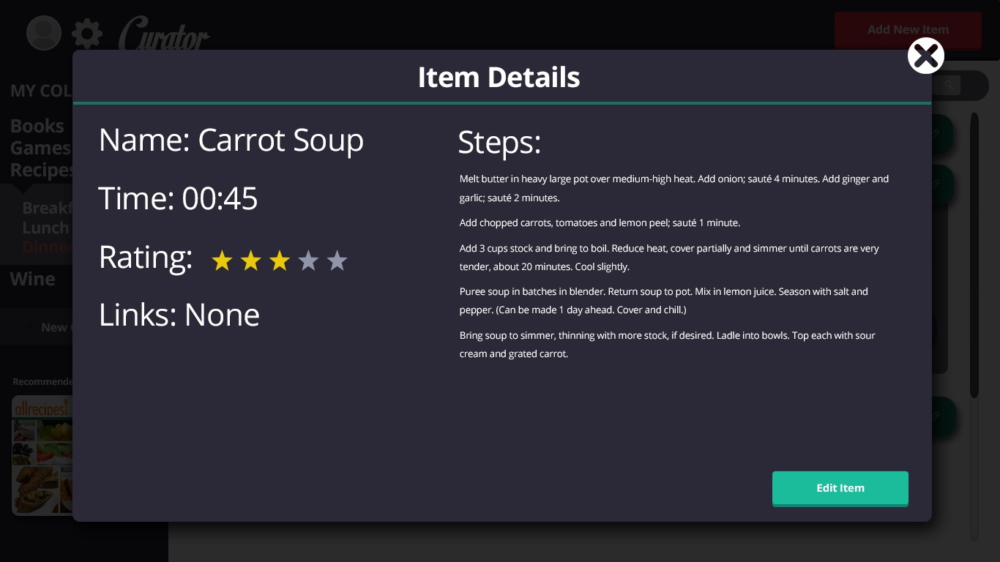
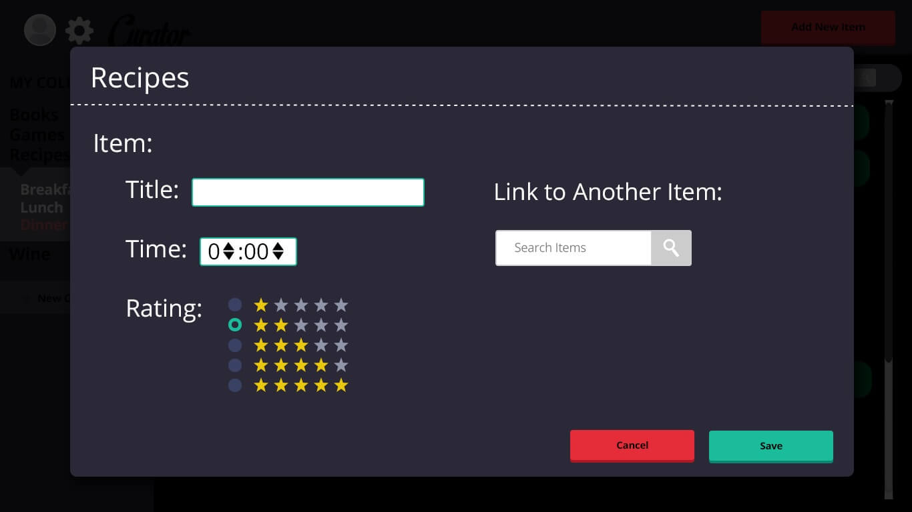
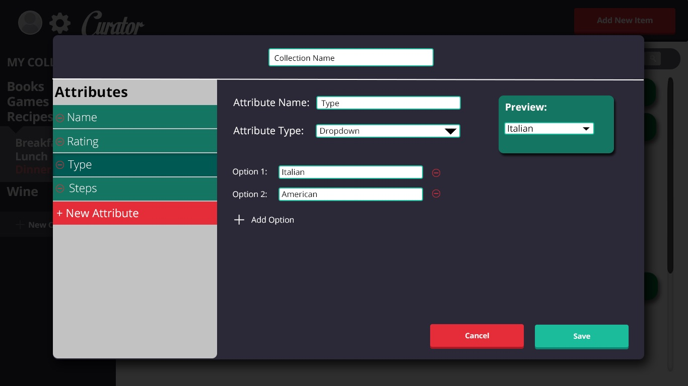
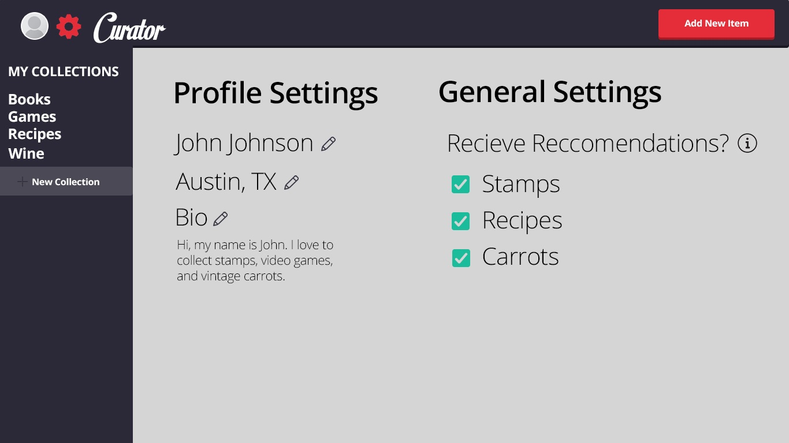

This project was done for CSCI 3002, Human Centered Computing Design & Development. My team and I created this interface for an application designed for collectors and hobbyists to store and manage their collections.